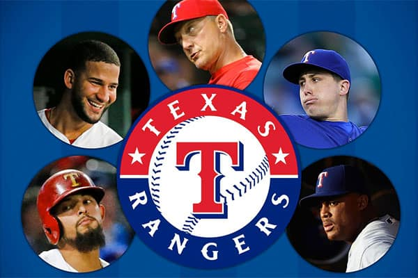
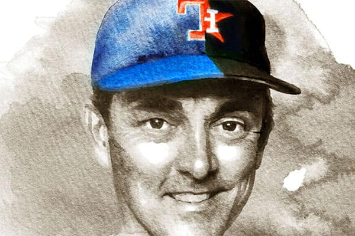

The post-game dousing, like the one Elvis Andrus (right) gave Nomar Mazara after a 5-4 win over the Angels, has become a celebratory ritual for these Texas Rangers, who won one-run games at a historic rate this season. (Tom Fox/Staff Photographer)
Kings of the clutch
The Texas Rangers are A.L. West champs thanks in part to a historic win-rate in one-run games. Guess what. It’s not just luck, either.
At 36-11, the Rangers have the best record for one-run games in the modern era of baseball. The record makes two statements about the Rangers. They have a stout bullpen at the end of games. They are relentless.
“It says a lot about the different elements of our games and our players,” manager Jeff Banister said. “The physical part of it … the resolve and resilience of our players and that belief they have in each other.”
A look at how the Rangers have brought about their historic success in one-run games:
One-run wins by team
The Rangers lead the league in one-run wins this season with 36, and wins when trailing at the beginning of the ninth inning with eight. In the chart below, each square represents one game in a team’s season. Compare the Rangers record of one-run games in 2016 to any other team in the league by clicking on the team name. Mouse over the squares to see the date and score of each game:
Rangers: 36-11
Entire season
Only one-run wins/losses
Wins when behind to start the 9th
Angels:
- Angels
- Astros
- Athletics
- Blue Jays
- Braves
- Brewers
- Cardinals
- Cubs
- Diamondbacks
- Dodgers
- Giants
- Indians
- Mariners
- Marlins
- Mets
- Nationals
- Orioles
- Padres
- Phillies
- Pirates
- Rays
- Red Sox
- Reds
- Rockies
- Royals
- Tigers
- Twins
- Yankees
- White Sox
Entire Season
Only one-run-wins/losses
Wins when behind to start the 9th
Source: Baseball-Reference.com
The bullpen
The Rangers have the second-highest bullpen ERA in the American League at 4.46. That is deceiving, Los Angeles Angels manager Mike Scioscia said.
“You look at that and think it’s not happening,” Scioscia said. “But Jeff Banister has done a great job of blending it together and finding the combinations that are going to hold a lead late in a game.
“For me, winning one-run games directly correlates to the back of the bullpen and the ability to hold a lead in the late innings. They’ve lost very few games there.”
In all one-run games, the Rangers’ bullpen is 27-6 with a 1.69 ERA and 27 saves in 33 chances. The bullpen has been close to air-tight when asked to protect a one-run lead.
The bullpen has carried a one-run lead through the final three innings in 12 one-run wins. The bullpen has also done that for four innings in eight wins and five innings in five wins.
Through June 1, the bullpen was only 4-4 with eight saves and a 3.16 ERA in one-run games. Banister had to shift through the possibilities before finding the right endgame set of relievers.
His best combination has been closer Sam Dyson set up by Matt Bush and Jake Diekman. They have a combined ERA of 1.76 for 71 2/3 innings in one-run games.
Good in the clutch
One reason the Rangers have been so good in one-run games lies in the fact they have players that excel in late-game situations when the score is close. The two charts below plot how players across the league performed in late and close situations in terms of runs produced and earned runs allowed. Players that fall in the shaded area, such as Ian Desmond, Adrian Beltre, Matt Bush and Sam Dyson, are outperforming the group average.
All teams
- All teams
- Angels
- Astros
- Athletics
- Blue Jays
- Braves
- Brewers
- Cardinals
- Cubs
- Diamondbacks
- Dodgers
- Giants
- Indians
- Mariners
- Marlins
- Mets
- Nationals
- Orioles
- Padres
- Phillies
- Pirates
- Rays
- Red Sox
- Reds
- Rockies
- Royals
- Tigers
- Twins
- Yankees
- White Sox
Source: Baseball-Reference.com
Note: Baseball-Reference defines “late and close” situations as the batting team tied, leading by one, or having the tying run at least on deck in the seventh inning or later. Runs produced is a combination of runs and RBIs minus home runs. To be included in the charts above, hitters must have a minimum of 200 plate appearances on the season and 50 “late and close” plate appearances. Pitchers must have a minimum of 30 innings pitched on the season and 10 “late and close” innings pitched. Group averages for batting average and earned run average are determined by calculating the group’s overall statistic in each category.
Advertisement
The grinders
The Rangers became this season only the third team since 1974 to win eight games when trailing after eight innings.
The 2003 Cincinnati Reds did it, but the wins were not much help. The Reds finished at 69-93.
The 1997 Florida Marlins did it, and the comebacks became the springboard to a World Series championship.
“Any time you start winning one-run games, it builds on itself,” said Milwaukee manager Craig Counsell, with the 1997 Marlins. “That’s what you want. You want that type of feeling to build so that it becomes “This is how we do it. It’s who we are as a team.’
“That’s confidence and belief. You can use those things to your advantage”
The Rangers have come back in 24 of the one-run wins, overcoming a multi-run deficit 12 times. The Rangers have scored the game-winning run in the seventh inning of later in 19 wins.
STATS LLC defines the “close and late” statistic as a team leading by one run, tied or with the tying run on base, at bat or deck in the seventh inning or later. The Rangers lead the majors in close-and-late average (.273,) slugging percentage (.454) and are tied with St. Louis for the most homers with 34.
On the individual level, third baseman Adrian Beltre is second in the majors for close-and-late average (.394,) third in RBIs (21) and fifth in slugging percentage (.660.)
Ian Desmond, Mitch Moreland and Beltre have all driven in the game-winning run in the seventh or later in three one-run victories. Rougned Odor leads the club with five RBIs in that situation on three homers, one double and one hit by pitch.
What if?
The Rangers won 77% of the one-run games they participated in, but what if they hadn't been so good in those clutch situations? Adjust the Rangers chance to win those one-run-games with the slider below and run the simulation to see how the A.L. West standings would have changed:
Win-probability in one-run games
50%| Team | W | L | W-L% | GB |
|---|---|---|---|---|
| Texas Rangers | 94 | 65 | .591 | -- |
| Seattle Mariners | 85 | 74 | .535 | 9 |
| Houston Astros | 83 | 76 | .522 | 11 |
| LA Angels | 72 | 87 | .453 | 22 |
| Oakland Athletics | 67 | 92 | .421 | 27 |
The significance
Bill James, who helped trigger the increased use of analytics in the game, is not overly impressed with an abundance of one-run wins
James’ long-standing theory is that top-shelf teams tend to win by multiple runs because they are capable of blowing out lesser opponents, but weak clubs have a chance in close games. The 2003 Detroit Tigers finished at 43-119, but they were 19-18 in one-run games.
That does not doom clubs like the Rangers. Of the teams with the top 10 records for one-run games before this season, five reached the World Series and two won: Pittsburgh in 1909 and Baltimore in 1970.
Of the 16 teams to win a World Series in this century, 10 had a winning record for one-run games in the regular season. A year ago, World Series champion Kansas City went 23-17 for one-run games in the regular season and 2-0 for the postseason.
column-inch trolls copyboy data visualization AOL afternoon paper shoot a photo attracting young readers, MinnPost but what's the business model Instagram fair use fourth estate morgue writing, The Work of Art in the Age of Mechanical Reproduction audience atomization overcome free as in beer Pictures of Goats section kitchen table of the future masthead.
Follow Gerry Fraley on Twitter at @gfraley.
Advertisement
Read more from The Dallas Morning News

The helmet conundrum
The ultimate symbol of football, the helmet, doesn't offer the ultimate in protection.
Which Texas Rangers player are you?
New to the Texas Rangers bandwagon? Take our quiz to see which Ranger you are most like.
A look through history
Who belongs on the team of greatest baseball players in Rangers and Astros history?